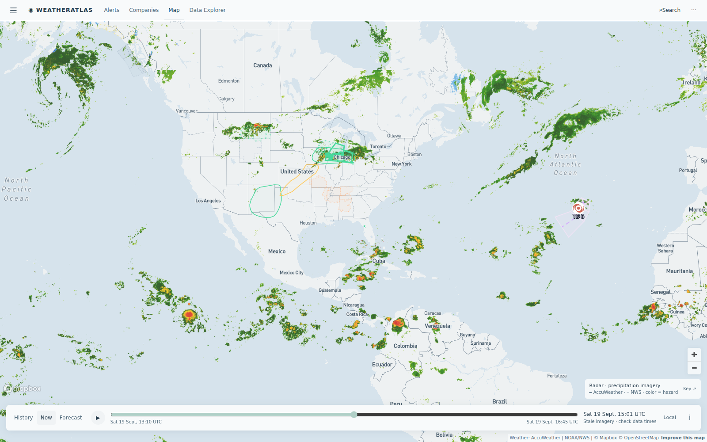

Daily severe-weather intelligence for LNG, refining, offshore, and terminal operators.

Live radar + alerts, 19 Sept 14:30 UTC. Tropical Depression 6 marked in the central tropical Atlantic (no US threat this week). The outlined storm corridors carry today's footprint: Midwest flood regime over the Tri-State corridor and Lake Michigan, continued convection over New Mexico Permian country, and the late-season heat dome easing over the Midcon. Interactive radar + hurricane tracker: accuweather.taborlin.co.
| System | Status | Energy-asset impact |
|---|---|---|
| TD 6 (central tropical Atlantic) | WATCH | Tropical depression (29 mph) moving west over open water — no Gulf or Caribbean threat this week; the statistical peak of hurricane season is now, so track checks stay daily |
| EP98 (Pacific, SW of Baja) | 80% / 48H | Tropical depression expected to form over the weekend, moving away from Mexico — Pacific marine/LNG logistics watching only |
| Midwest flood regime — Lake Michigan / Tri-State | ACTIVE | Multi-county flood watches live around Chicago and Dubuque with 1–3" and locally higher totals; AccuWeather flash-flood threats flagged at lakeside refining and riverfront nitrogen-plant sites — dock, rail and barge loading exposed |
| Permian flash-flood flags (NM) — day 2 | ACTIVE | Second straight day of AccuWeather flash-flood threats on Bone Spring / Avalon operators — pad lightning stand-downs and haul-road washout risk |
| Upper Midwest / Wyoming flood watches | ACTIVE | NWS flood watches persist across Wyoming and Montana field country — pad access roads and crew moves at washout risk through the weekend |
| Midcon heat dome (final surge) | EASING | Final day of 90s across the Kansas–Oklahoma refining belt before autumn cooldown — power-burn lift and worker heat limits, then a regime change |
Same evening hours, same coordinates (East Dubuque, Iowa — riverfront nitrogen plant corridor, 42.49°N 90.65°W), two very different planning answers:
73–79% afternoon storm window under a lakeside flood watch while free feeds read 8–18% — the Midwest's largest refinery planning against two different skies today.
Live brief →85% evening storm + flash-flood window in the day's heaviest rain axis; free data halves it and misses the flood flag — the forecast-gap headline of the day.
Live brief →Oil slides hard again as Saudi alternate routes deflate the supply premium; Henry Hub holds its bid on the final Midcon heat surge — today's weather-trade read.
Market note →Asset-pinned AccuWeather + NWS alert board with lightning feed — the same data powering these briefs.
accuweather.taborlin.co →